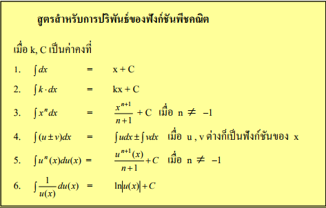

ปริพันธ์และการหาปริพันธ์

กระบวนการทางแคลคูลัสที่เป็นส่วนกลับของการหาอนุพันธ์ (Differentiation) ใช้สำหรับหาพื้นที่ใต้กราฟหรือรวมค่าปริมาณย่อยเข้าด้วยกันชนิดของปริพันธ์ปริพันธ์ไม่จำกัดเขต (Indefinite Integral): ไม่มีขอบเขต ผลลัพธ์ที่ได้จะเป็นฟังก์ชันทั่วไปบวกด้วยค่าคงตัว c เขียนแทนด้วย \(\int f(x) dx = F(x) + c\)ปริพันธ์จำกัดเขต (Definite Integral): มีขอบเขตจาก a ถึง b ผลลัพธ์ที่ได้จะเป็นจำนวนจริงค่าหนึ่ง คำนวณได้จาก F(b) - F(a)